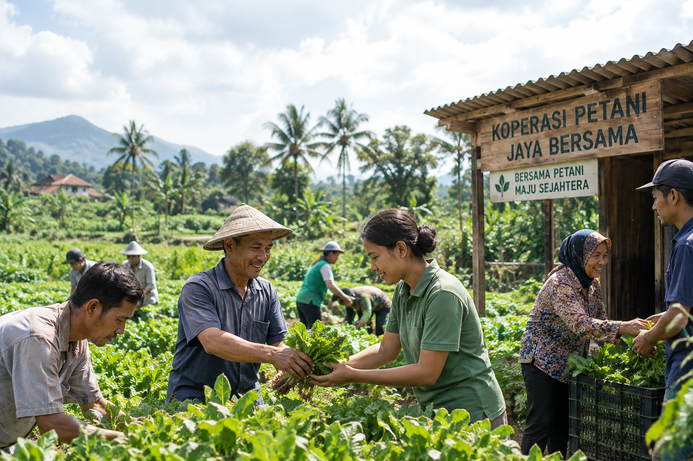

01
Perkoperasian
Kelola keanggotaan, kepengurusan, dan kebijakan koperasi.
ASR+
Kelola keanggotaan, simpanan, pinjaman, kegiatan usaha, dan keuangan koperasi dengan lebih tertata dalam satu sistem.

AKPRO+ membantu koperasi mengelola kegiatan dan keuangan dengan lebih tertata.
Pelajari AktivitasnyaKetika data anggota, transaksi, dan pencatatan berjalan terpisah, memahami kondisi koperasi menjadi lebih sulit. AKPRO+ membantu menghubungkan proses tersebut dalam satu sistem yang mudah ditelusuri.
Pelajari Aktivitas AKPRO+Catat transaksi satu kali. Informasinya dapat digunakan pada proses yang berkaitan.
Prinsip kerja AKPRO+Kenali berbagai fitur untuk mendukung layanan anggota, pengelolaan usaha, perencanaan, pencatatan keuangan, dan pelaporan koperasi.
Kelola keanggotaan, kepengurusan, dan kebijakan koperasi.
Kelola kas, rekening bank, pemindahan dana, dan rekonsiliasi.
Kelola produk simpanan dan transaksi anggota.
Kelola produk, pengajuan, dan angsuran pinjaman anggota.
* Fitur disediakan sesuai kebutuhan dan tahap penerapan di koperasi.
Lihat Seluruh FiturDengan sistem modular, Anda tidak perlu khawatir tagihan bengkak akibat modul yang tidak diperlukan oleh kegiatan usaha koperasi.
Informasi dicatat pada kegiatan terkait, kemudian mendukung pencatatan keuangan dan penyusunan laporan koperasi.
Catat layanan anggota atau transaksi usaha pada bagian yang sesuai.
Kegiatan koperasiData terkait tersusun mengikuti alur kegiatan dan dapat ditelusuri.
Saling terhubungTransaksi mendukung proses akuntansi sesuai pengaturan koperasi.
AkuntansiGunakan informasi yang tersusun untuk memantau kegiatan dan kondisi koperasi.
Laporan koperasiPengelolaan yang terarah membantu pengurus dan anggota memperoleh informasi yang lebih jelas serta mendukung perkembangan koperasi.
Sampaikan Kebutuhan KoperasiData dicatat sesuai kegiatannya untuk mengurangi pencatatan berulang.
Informasi layanan anggota dan usaha mendukung pencatatan yang sesuai.
Hak pengguna dapat disesuaikan dengan tugas dan tanggung jawabnya.
Fitur dapat mendukung kebutuhan koperasi yang berkembang dari waktu ke waktu.
Informasi yang tertata membantu pengurus, pengawas, dan pengelola menjalankan tanggung jawab masing-masing.
Pantau kegiatan dan gunakan laporan sebagai landasan pembuatan kebijakan.
Kelola layanan anggota serta pencatatan kegiatan sehari-hari.
Tinjau informasi dan kegiatan koperasi sesuai kewenangan.
Temukan jawaban seputar AKPRO+ atau hubungi Tim Kami.
Baca Seluruh JawabanAKPRO+ adalah sistem pengelolaan koperasi yang membantu menghubungkan layanan anggota, kegiatan usaha, pencatatan keuangan, dan laporan.
AKPRO+ ditujukan bagi koperasi yang ingin mengelola kegiatan dan informasi usahanya secara terpadu. Hubungi Tim Kami untuk membahas kebutuhan koperasi Anda.
Hubungi Tim Kami melalui email atau WhatsApp untuk memperoleh informasi mengenai fitur dan penerapan AKPRO+.
Fitur AKPRO+ tersedia secara bertahap. Hubungi Tim Kami untuk mengetahui informasi terkini.
Aplikasi saat ini belum dapat diakses karena masih dalam tahap pengembangan. Informasi ketersediaan akan disampaikan kemudian.
Sampaikan kebutuhan koperasi Anda melalui email atau WhatsApp. Tim Kami siap memberikan informasi lebih lanjut.